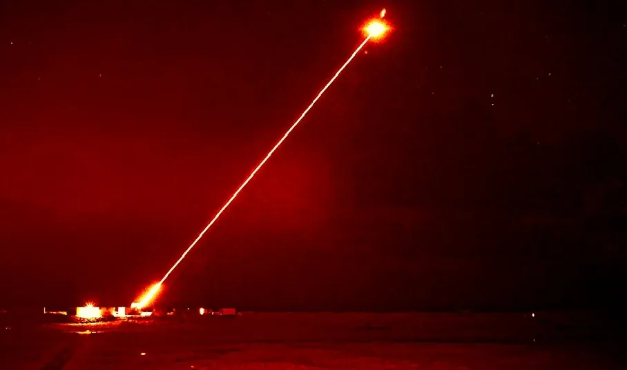
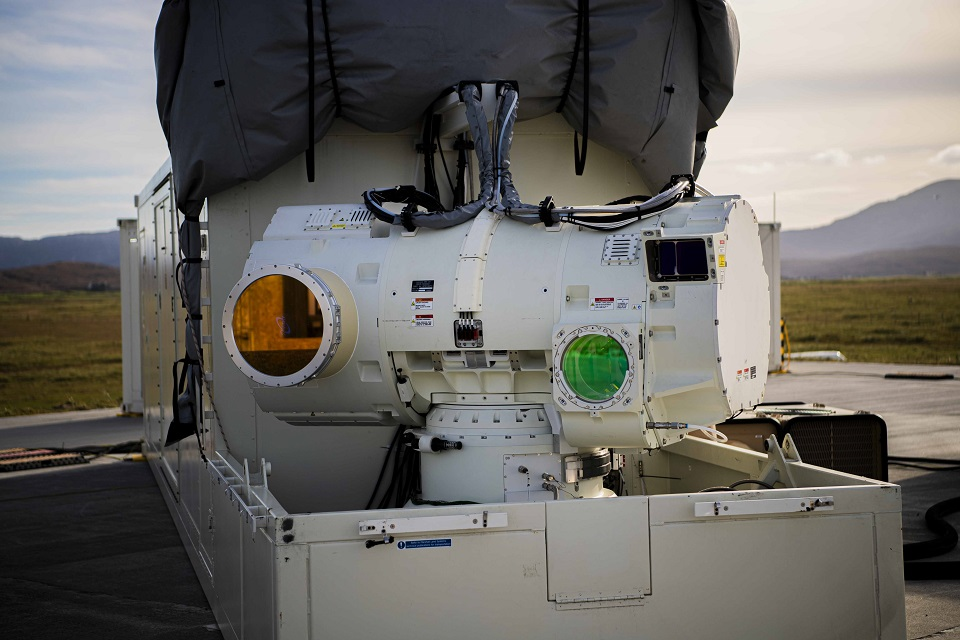

The **DragonFire** is a groundbreaking laser directed energy weapon (LDEW) developed by the UK for the Ministry of Defence. This advanced system is designed to provide a low-cost, high-precision defence capability against a range of threats, including drones, missiles, and mortars.
One of DragonFire's most significant advantages is its operational cost. Firing the laser for ten seconds costs less than £10, making it extremely cost-effective compared to traditional missile interceptions. This affordability allows for more frequent deployment and testing, enhancing its readiness and effectiveness.
Developed by MBDA UK, Leonardo UK, and QinetiQ, DragonFire represents a significant leap in defensive technology. Its precision targeting allows it to engage small, fast-moving targets with incredible accuracy, demonstrating its potential to revolutionize air defence. The system is expected to be integrated into naval vessels and ground vehicles, offering versatile protection across various operational environments.
 Back to Home